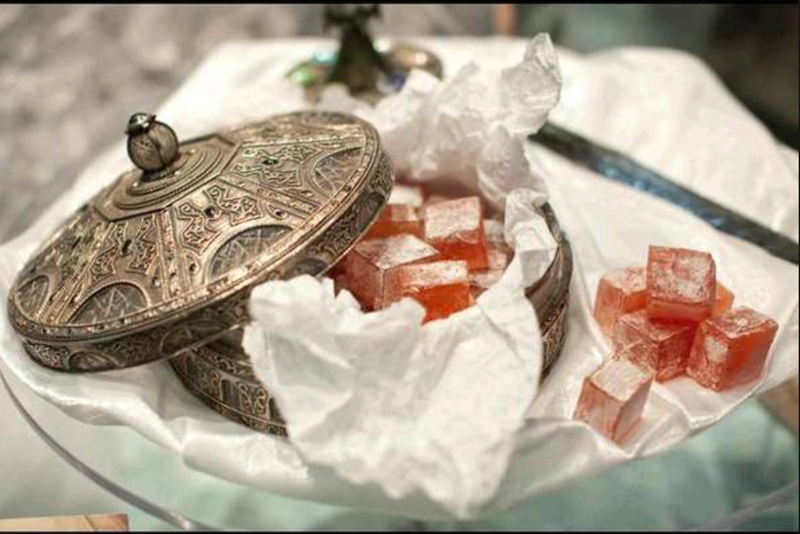

THE CHRONICLES OF NARNIA'S TURKISH DELIGHT

Description
Make the classic (and delicious) turkish delight that you know from The Chronicles of Narnia's 'The Lion, The Witch and the Wardrobe'.
Ingredients
- 380 g / 1.9c white sugar
- 455ml water
- 1/2 tsp cream of tartar
- 95 g/ 3/4c cornflour
- 150ml water
- 1 cup pistachios
- ½ tsp rosewater essence (or 2–4 tsp rosewater)
- a drop of rose food colouring
- Icing sugar for dusting
- Butter or oil (for greasing)
- a bowl of cold water
Steps
- Start by buttering a square casserole pan measuring 20cm by 20cm.
- In one medium sized saucepan, pour in the white sugar, cream of tartar and the 455ml of water. Stir over medium heat until the sugar dissolves.
- While you let the sugar come to a boil, in another saucepan, (same size or slightly smaller) stir together the cornflour and 200ml of water. Note: do not start mixing this cornflour mixture until after you’ve finished stirring the sugar. If you start the cornflour too soon, the mixture will clump together into a large mass and won’t dissolve properly later.
- Whisk the cornflour and water until it’s a smooth paste, then add it straight away to the sugar mixture.
- Whisk the cornflour mixture into the sugar syrup over medium heat for a minute or two. Once the sugar mixture comes to a boil, turn down the heat to low.
- Grab a wooden spoon (and a seat) and continue to stir continuously in the same direction for the next 40-50 minutes. You’ll know the mixture is ready for testing when the sugar mixture is thick and clearly pulls away from the edges of the pan.
- Scoop a little bit of the mixture and drop it into the cool water. The mixture will stay together but is very soft to the touch.
- Pour in the flavour first, then the rose colour. Stir for another minute over heat, then turn off the stove. Stir in the pistachios and scoop the mixture into the casserole dish.
- Use a spoon to spread it out, then leave to cool on the counter.
- Sprinkle icing sugar onto a cutting board and onto the top of the turkish delight.
- Turn the Turkish Delight out onto the board and use a long sharp knife to slice, sprinkling icing sugar over the knife between each cut to keep from sticking.
- Sprinkle more icing sugar over the Turkish Delight to coat before serving.
- Turkish Delight can be stored in a container at room temperature with a cloth dishtowel over the top.